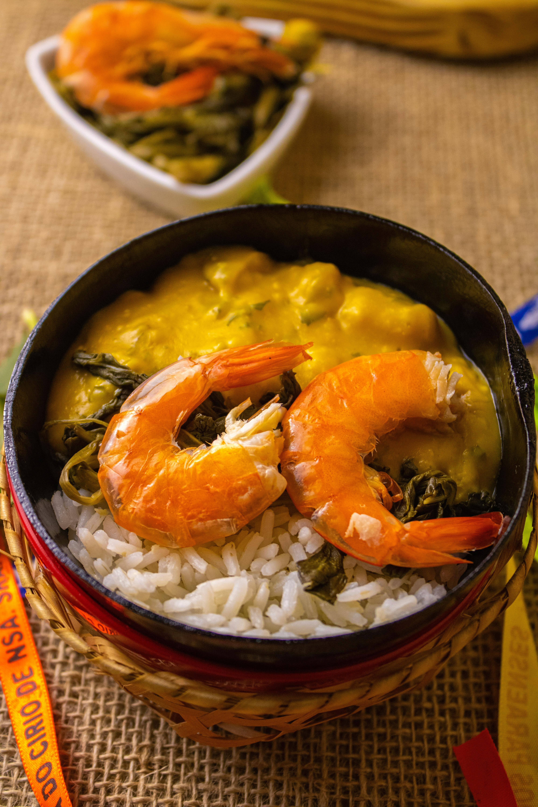
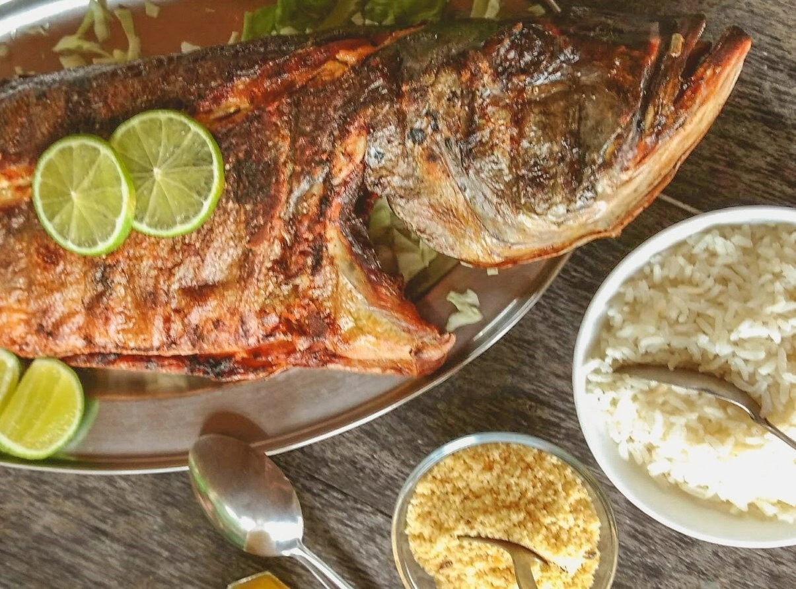
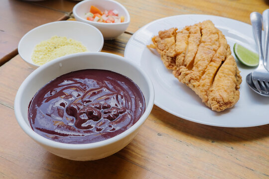

Hotel Ibis
O Hotel ibis Styles Belém Hangar está localizado na Av. Duque de Caxias,1538, bairro Marco,Belém-PA.
Ver mais


Descubra os melhores lugares para se hospedar
O Hotel ibis Styles Belém Hangar está localizado na Av. Duque de Caxias,1538, bairro Marco,Belém-PA.

O Hotel Ipe está localizado na Av. Governador José Malcher, 2953, bairro São Brás, Belém-PA.
Ver mais
O Belém Soft Hotel está localizado na Avenida Brás de Aguiar, 836, bairro Nazaré, Belém-PA.
Ver maisDescubra os melhores pontos turísticos para visitar em Belém e região

A Estação das docas está localizada na Av. Boulevard Castilho França, s/n - Cidade Velha (próximo ao Ver-o-Peso)
Ver mais
situada no município de Belém, no estado do Pará, localizada a cerca de 20 a 22 km a noroeste do centro da capital
Ver mais
A Ilha do Combu fica localizada no município de Belém, no estado do Pará, a apenas 15 minutos de barco. Situada no Rio Guamá
Ver maisConfira os melhores restaurantes para experimentar a culinária de Belém e região

Localiza-se no Espaço Cultural Casa das Onze Janelas, na Rua Siqueira Mendes, s/n, Cidade Velha..
Ver mais
Localiza-se na Travessa Wandenkolk, número 593, esquina com a Travessa Antônio Barreto
Ver mais
localiza-se na Avenida Conselheiro Furtado, 1420 - Nazaré
Ver mais
Caldo de tucupi com jambu e camarão, servido nas ruas da cidade.

Peixe amazônico muito apreciado, grelhado com acompanhamentos típicos.

Prato tradicional feito com folhas de mandioca cozidas por sete dias.

Prato típico da região, feito com açaí e peixe frito.
Mistura única de arquitetura histórica e a exuberância da maior floresta tropical do mundo.
A gastronomia é um espetáculo à parte, com sabores autênticos como o tucupi e o açaí
Do Ver-o-Peso ao pôr do sol na Estação das Docas, a cidade pulsa cultura e energia.